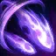

>
카이사의 W - html
카이사
Q
W
E
W
W - 공허추적자
(Second Skin)

카이사가 공허 에너지 광선을 발사해 처음으로 적중한 적에게 마법 피해를 입히고 플라즈마를 2회 적용하며, 4초 동안 절대 시야를 얻습니다.
대미지
30 / 55 / 80 / 105 / 130
마나소모값
55 / 60 / 65 / 70 / 75
쿨타임
22 / 20 / 18 / 16 / 14